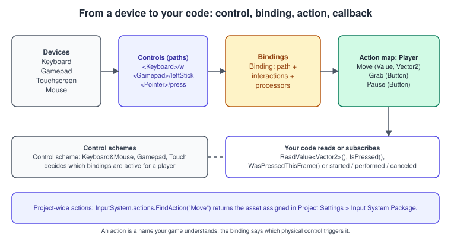
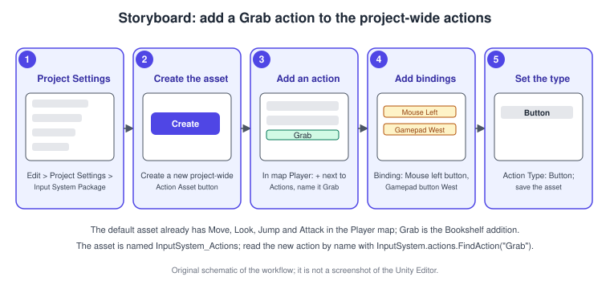
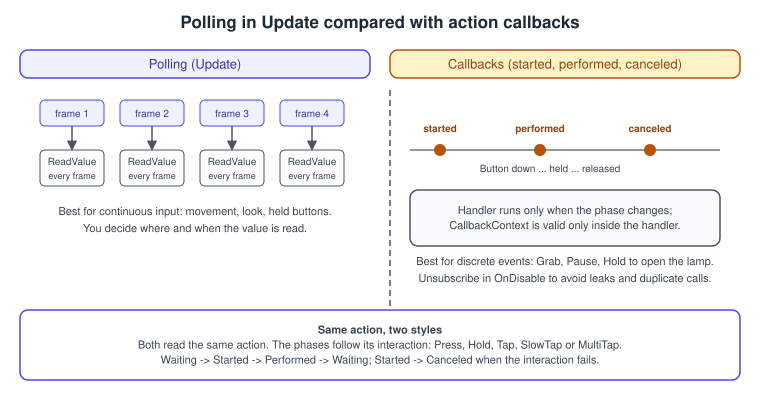
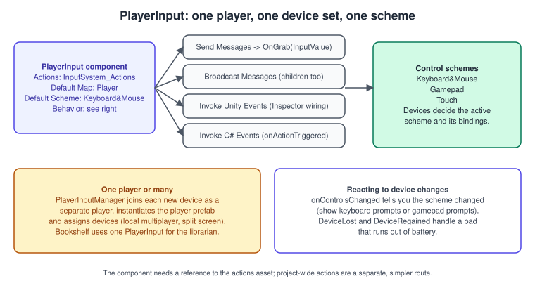
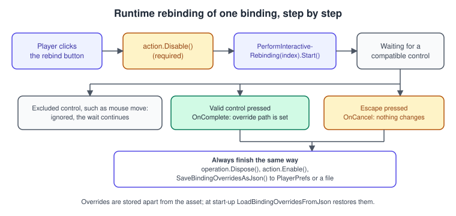
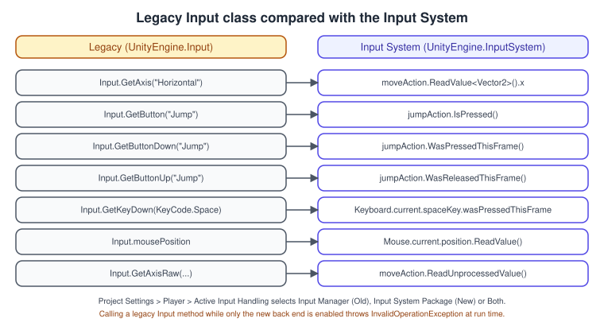

Input System
|
This content was generated with the assistance of AI and should be verified against the official documentation before being relied on in production. |
A game is a conversation, and input is the player’s half of it. The same intention, "move the librarian left", arrives as the A key on a keyboard, the left stick of a gamepad, a swipe on a touch screen or a tracked controller in a headset. The Input System package lets the game say what it wants (a Move action that produces a 2D vector) and keeps the knowledge of which physical controls produce it in data, so a new device or a player’s own key layout needs no new code. This page explains the model, builds the controls of the Bookshelf step by step and shows how to read, rebind and test them.
The facts were checked in November 2026. The page documents Unity 6.3 LTS (6000.3) with the Input System package 1.20 (the version listed for 6.3 LTS; the documentation is at version 1.20.1), and mentions Unity 6.6 where its release notes change input behaviour. It covers keyboard and mouse, gamepads, touch screens and the UI, on desktop (Windows, macOS, Linux), consoles, mobile and the Web platform; XR controllers use the same actions and are in XR Development. The running example is the Bookshelf: in the "catch the falling books" stage the librarian walks along the shelf with Move, grabs a book with Grab, and pauses with Pause. The shared model of the shelf is bookshelf.glb. The general concepts of input devices, polling and events are in Physics, Audio and Input Basics.
What problem the Input System solves
Unity has two input back ends. The older one, the Input Manager, is the UnityEngine.Input class with a list of named axes stored in a project setting. It is simple, but it is polled only, supports a fixed set of devices through a fixed set of
KeyCode values, has no rebinding, no per-player devices and no touch or gamepad hot-plug model. The Input System package (com.unity.inputsystem) replaces it with an event-driven design built on four ideas:
-
Devices and controls. Every piece of hardware is a device object (
Keyboard,Mouse,Gamepad,Touchscreen, XR controllers) made of typed controls (ButtonControl,StickControl,Vector2Control). Each control has a path such as<Gamepad>/leftStick. -
Actions. An action is a named intent with a type (Button, Value or Pass-Through) and an expected value type (bool, float,
Vector2). Game code talks only to actions. -
Bindings. A binding connects an action to a control path, optionally with interactions and processors that reshape the signal. Bindings live in an Input Actions asset, not in code.
-
Control schemes. A scheme groups the devices a player uses (keyboard and mouse, gamepad, touch) and decides which bindings are active.

Source: Input System package manual
Installing the package and choosing the back end
Unity 6.1 and later include the Input System package in projects created from some templates. To check or install it: Window > Package Manager, choose Unity Registry, select Input System and click Install. Unity asks whether to enable the Input System back ends and disable the Input Manager ones; choosing Yes restarts the Editor. The choice is stored in Edit > Project Settings > Player > Other Settings > Active Input Handling:
| Value | Effect on builds |
|---|---|
Input Manager (Old) |
Builds define |
Input System Package (New) |
Builds define |
Both |
Both scripting symbols are defined and both back ends run. Useful while migrating, at the cost of processing input twice. |
The Editor restarts when the value changes. The Bookshelf, created from the Universal 3D (URP) template, uses Input System Package (New) only. Using #if ENABLE_INPUT_SYSTEM around code lets a script compile under either setting, which is how libraries support both.
Core concepts
Devices and controls
A device is an InputDevice; devices are added and removed as hardware connects. A control is a typed value on a device: a button has a float actuation between 0 and 1, a stick has a Vector2, a touch screen has up to ten touch controls.
Controls form a hierarchy (a gamepad’s leftStick has x, y, up, down, left and right children) and can be read directly or through actions. A control path is a string that finds controls:
| Path | Matches |
|---|---|
|
The space bar of any keyboard. |
|
The left stick of any gamepad (a PlayStation, Xbox or Switch controller maps to the same layout). |
|
The bottom face button (A on Xbox, Cross on PlayStation): the path names the position, not the label. |
|
The position of mouse, pen or touch (the common base layout of pointing devices). |
|
The press control of every touch (wildcards select several controls). |
|
The left mouse button. |
Because a path names a layout, not a physical device, one binding works for every controller that implements the layout. The same mechanism is why <Gamepad>/buttonSouth is preferable to a button number.
Actions
An action has a name, a type and an optional expected control type:
-
Button: something pressed and released (Jump, Grab). Poll with
IsPressed(),WasPressedThisFrame()andWasReleasedThisFrame(). -
Value: a continuous value (Move, Look). The action tracks the actuated control and reports changes; read it with
ReadValue<T>(). When several controls are bound, the one with the greatest actuation wins (disambiguation). -
Pass-Through: like Value but without disambiguation: every change from every bound control is passed on. Use it for several simultaneous sources, such as binding one action to several touches with a wildcard.
An action is enabled or disabled; a disabled action receives no input. Actions are grouped into action maps (a map named Player for gameplay, UI for menus), and a map is enabled or disabled as a group, which is the usual way to switch between gameplay and menu control.
An action carries a phase: Disabled, Waiting, Started, Performed or Canceled. The phases are what the callbacks started, performed and canceled report, and what interactions drive.
Bindings, composites, interactions and processors
A binding is one path (or one composite) attached to an action. An action usually has several: a Move action is bound to W, A, S and D, to the arrow keys, to the gamepad’s left stick and to a touch stick at once.
A composite binding synthesises one control from several: Up/Down/Left/Right Composite builds a Vector2 from four keys, Positive/Negative Binding builds a float from two buttons, Binding With One Modifier requires a modifier key (for example Ctrl and S). Without a composite, binding a button to a Vector2 action fails at run time.
An interaction describes a pattern of actuation: Press, Hold, Tap, SlowTap and MultiTap are built in. It decides when the action is started, performed or canceled; an action with no interaction uses the default one for its type, which performs immediately when a button is pressed.
A processor transforms the value: Clamp, Invert, Normalize, Scale and the stick dead zone processors are built in. Interactions and processors can be placed on the action (applying to all its bindings) or on one binding.
Custom ones are written by implementing IInputInteraction or extending InputProcessor<TValue> and registering them.
Source: Composite bindings, Built-in interactions and Built-in processors
Control schemes
An action asset can define control schemes, such as Keyboard&Mouse, Gamepad and Touch. A scheme lists the device types it needs; a binding belongs to one or more schemes through its binding groups. When the Player Input component has Auto-Switch enabled and the player touches a different device, the component changes scheme and only that scheme’s bindings are active. This is also how a game shows the right button prompts: it reads the current scheme and displays keyboard or gamepad icons.
Project-wide actions
The package can store the input configuration in one Input Actions asset that is assigned as project-wide. Unless the project has specific needs for more than one asset, one project-wide asset is the recommended workflow. The advantages:
-
the asset is preloaded when the app starts and stays available until it ends;
-
actions are reachable as
InputSystem.actionswithout a serialized reference; -
the actions are enabled by default.
Creating and assigning the asset
-
Open Edit > Project Settings > Input System Package.
-
If no asset is assigned, click Create a new project-wide Action Asset. Unity creates
InputSystem_Actionsin the Project and assigns it. (If an asset is already assigned, the Actions Editor appears instead of the button.) -
The asset contains two action maps: Player, with actions such as Move, Look, Jump and Attack, and UI, with actions such as Navigate, Submit and Cancel.
-
In the Player map, click the + next to Actions and name the new action Grab. Repeat for an action named Pause, which the Player Input example below uses.
-
Select the Grab action. In the properties panel, set Action Type to Button.
-
Use the + on the action to add bindings: Mouse > Left Button and Gamepad > Button West. Assign the mouse binding to the keyboard and mouse control scheme and the gamepad binding to the gamepad scheme, if the asset defines them.
-
Save the asset with the save control of the Actions Editor (or enable auto-save).

Source: Input System: Create and assign a default project-wide actions asset and About project-wide actions
The exact default action names (Move, Look, Jump, Attack and so on) and the group names can differ between package versions; the Actions Editor shows what is in your asset. Code that depends on a name should assert at start-up that FindAction returned non-null.
The older asset named DefaultInputActions.inputactions (and the generated class DefaultInputActions) is a separate legacy asset that remains in the package for backwards compatibility; it is not the project-wide asset.
Reading input
The package documents two main ways to respond to actions: polling and callbacks. Polling reads the state every frame, usually in Update; callbacks run code when the phase of the action changes.

Polling
For a Value or Pass-Through action, call ReadValue<T>() with the type matching the control (Vector2 for a 2D axis). For a Button action, use IsPressed(), WasPressedThisFrame() or WasReleasedThisFrame(). For an action with an interaction, phase, WasPerformedThisFrame() and WasCompletedThisFrame() report the interaction state.
Polling suits continuous input, such as movement, because the code that moves the character stays in one place.
The Bookshelf’s librarian is a CharacterController driven by the project-wide actions. This complete script polls Move and handles Grab with a callback:
using UnityEngine;
using UnityEngine.InputSystem;
namespace Bookshelf.Input
{
[RequireComponent(typeof(CharacterController))]
public sealed class LibrarianController : MonoBehaviour
{
[SerializeField] private float _speed = 4f;
[SerializeField] private float _turnDegreesPerSecond = 540f;
private CharacterController _controller;
private InputAction _move;
private InputAction _grab;
/// <summary>Raised when the player presses Grab. The Gameplay assembly listens to it.</summary>
public event System.Action GrabPressed;
private void Awake()
{
_controller = GetComponent<CharacterController>();
// Project-wide actions are enabled by default and found by "Map/Action" or by action name.
_move = InputSystem.actions.FindAction("Player/Move", throwIfNotFound: true);
_grab = InputSystem.actions.FindAction("Player/Grab", throwIfNotFound: true);
}
private void OnEnable() => _grab.performed += OnGrabPerformed;
// Unsubscribe in OnDisable, or the callback runs on a disabled or destroyed object.
private void OnDisable() => _grab.performed -= OnGrabPerformed;
private void OnGrabPerformed(InputAction.CallbackContext context) => GrabPressed?.Invoke();
private void Update()
{
Vector2 input = _move.ReadValue<Vector2>();
Vector3 direction = new Vector3(input.x, 0f, input.y);
if (direction.sqrMagnitude > 0.0001f)
{
Quaternion target = Quaternion.LookRotation(direction, Vector3.up);
transform.rotation = Quaternion.RotateTowards(
transform.rotation, target, _turnDegreesPerSecond * Time.deltaTime);
}
// SimpleMove takes a velocity in metres per second, applies gravity, and ignores the Y component.
_controller.SimpleMove(direction * _speed);
}
}
}Source: Input System: Polling actions, About project-wide actions and Scripting API: CharacterController.SimpleMove
FindAction is a lookup by string; do it once in Awake or Start and keep the reference. The rest of the character-movement model (when to use Rigidbody or a CharacterController, the FixedUpdate rule) is in
3D Physics.
Callbacks
Every action has started, performed and canceled events. Each handler receives an InputAction.CallbackContext, which gives the phase, the control that triggered the action and ReadValue<T>(). The context is only valid during the callback: do not store it and read it later.
An action map has actionTriggered, which reports all three phases of every action in the map, and InputSystem.onActionChange reports changes of any action or map globally.
The remaining way to be called back, the Player Input component, is covered below.
Which style to use? Polling is usually simpler for actions with a continuous effect on a single character; callbacks suit less continuous input or input directed to many places, such as opening a menu, firing an event or picking an item. Callbacks have one more advantage: they are called with the interaction phase, so a Hold interaction can drive a progress bar.
Interactions in code: hold to open the desk lamp
The Bookshelf’s lamp is toggled by holding a button for 0.6 seconds. This example creates the action in code, which is also the quickest way to prototype, and uses the phases to drive a progress value:
using UnityEngine;
using UnityEngine.InputSystem;
using UnityEngine.Events;
namespace Bookshelf.Input
{
public sealed class HoldToToggleLamp : MonoBehaviour
{
[SerializeField] private Light _lamp;
[SerializeField] private float _holdSeconds = 0.6f;
[SerializeField] private UnityEvent<float> _progress; // 0 to 1, for a UI fill image or a UI Toolkit element
private InputAction _lampAction;
private float _startTime;
private bool _holding;
private void Awake()
{
// The binding string order is: name, type, binding, interactions, processors, expectedControlType.
_lampAction = new InputAction(
name: "Lamp",
type: InputActionType.Button,
binding: "<Keyboard>/l",
interactions: $"hold(duration={_holdSeconds.ToString(System.Globalization.CultureInfo.InvariantCulture)})");
_lampAction.AddBinding("<Gamepad>/buttonNorth");
}
private void OnEnable()
{
_lampAction.started += OnStarted;
_lampAction.performed += OnPerformed;
_lampAction.canceled += OnCanceled;
_lampAction.Enable(); // actions created in code are disabled until you enable them
}
private void OnDisable()
{
_lampAction.started -= OnStarted;
_lampAction.performed -= OnPerformed;
_lampAction.canceled -= OnCanceled;
_lampAction.Disable();
}
private void OnDestroy() => _lampAction.Dispose(); // actions created in code own unmanaged resources
private void OnStarted(InputAction.CallbackContext context)
{
_holding = true;
_startTime = Time.time;
}
private void OnPerformed(InputAction.CallbackContext context)
{
_holding = false;
_progress.Invoke(0f);
_lamp.enabled = !_lamp.enabled;
}
private void OnCanceled(InputAction.CallbackContext context)
{
_holding = false;
_progress.Invoke(0f);
}
private void Update()
{
if (_holding)
{
_progress.Invoke(Mathf.Clamp01((Time.time - _startTime) / _holdSeconds));
}
}
}
}An action defined this way is not in an asset, so it cannot be rebound by a designer; for the real game, put the Lamp action in the asset with a Hold interaction. Code-defined actions are for prototypes, tests and small utilities.
The same API builds composites: action.AddCompositeBinding("2DVector").With("Up", "<Keyboard>/w").With("Down", "<Keyboard>/s").With("Left", "<Keyboard>/a").With("Right", "<Keyboard>/d") creates a keyboard Move binding.
Picking a book with a pointer
Step 7 of the running example is picking a book: the player clicks or taps it. The Pointer layout covers mouse, pen and the primary touch, so one code path serves desktop and mobile.
using UnityEngine;
using UnityEngine.InputSystem;
namespace Bookshelf.Input
{
public sealed class BookPicker : MonoBehaviour
{
[SerializeField] private Camera _camera;
[SerializeField] private LayerMask _bookLayers = ~0;
[SerializeField] private float _maxDistance = 20f;
private void Update()
{
Pointer pointer = Pointer.current; // the most recently used pointer, or null
if (pointer == null || !pointer.press.wasPressedThisFrame)
{
return;
}
Vector2 screenPoint = pointer.position.ReadValue();
Ray ray = _camera.ScreenPointToRay(screenPoint);
if (Physics.Raycast(ray, out RaycastHit hit, _maxDistance, _bookLayers))
{
Debug.Log($"Picked {hit.collider.name} at {hit.point}");
}
}
}
}This reads the device directly, which is allowed (see below) but not rebindable. To make it rebindable, add Point (a Value action of Vector2, bound to <Pointer>/position) and Click (a Button action, bound to <Pointer>/press) to the asset, and read those. The UI map of the default asset already has such actions for the UI.
Picking a book under a screen point with a physics ray is described in 3D Physics; the geometry of the ray in Coordinate Spaces and Transforms.
The Player Input component
Player Input is a component that represents one player: it holds an action asset, the player’s devices and the active control scheme, and it connects actions to your code with no polling. It also handles local-multiplayer joining together with the Player Input Manager.
Assign the asset (usually InputSystem_Actions) to its Actions field, set the Default Map and a Default Scheme, and choose a Behavior:
| Behavior | How it notifies your code |
|---|---|
Send Messages |
Calls a method named |
Broadcast Messages |
Same, but also calls the methods on child GameObjects. |
Invoke Unity Events |
Each action has a |
Invoke C Sharp Events |
You subscribe in code to |

The documentation advises that, when project-wide actions are used, all the action maps are enabled by default; manually disable them and enable only the default map from Start(). A complete C# Events example, which also switches button prompts when the player changes device:
using UnityEngine;
using UnityEngine.InputSystem;
namespace Bookshelf.Input
{
[RequireComponent(typeof(PlayerInput))]
public sealed class PlayerInputBridge : MonoBehaviour
{
[SerializeField] private GameObject _keyboardPrompts;
[SerializeField] private GameObject _gamepadPrompts;
private PlayerInput _playerInput;
public Vector2 Move { get; private set; }
private void Awake()
{
_playerInput = GetComponent<PlayerInput>();
_playerInput.notificationBehavior = PlayerNotifications.InvokeCSharpEvents;
}
private void OnEnable()
{
_playerInput.onActionTriggered += OnActionTriggered;
_playerInput.onControlsChanged += OnControlsChanged;
_playerInput.onDeviceLost += OnDeviceLost;
_playerInput.onDeviceRegained += OnDeviceRegained;
OnControlsChanged(_playerInput);
}
private void OnDisable()
{
_playerInput.onActionTriggered -= OnActionTriggered;
_playerInput.onControlsChanged -= OnControlsChanged;
_playerInput.onDeviceLost -= OnDeviceLost;
_playerInput.onDeviceRegained -= OnDeviceRegained;
}
private void OnActionTriggered(InputAction.CallbackContext context)
{
if (context.action.name == "Move")
{
// canceled reports a zero value when the stick is released or the keys are lifted.
Move = context.ReadValue<Vector2>();
}
else if (context.action.name == "Pause" && context.performed)
{
_playerInput.SwitchCurrentActionMap("UI");
}
}
private void OnControlsChanged(PlayerInput input)
{
bool gamepad = input.currentControlScheme == "Gamepad";
_gamepadPrompts.SetActive(gamepad);
_keyboardPrompts.SetActive(!gamepad);
}
private void OnDeviceLost(PlayerInput input) => Time.timeScale = 0f; // a wireless pad ran out of battery
private void OnDeviceRegained(PlayerInput input) => Time.timeScale = 1f;
}
}Source: Input System: Get started with the Player Input component and Select a notification behavior
The control scheme names in the sample ("Gamepad", "Keyboard&Mouse") are the names stored in your asset; check them in the Actions Editor. For local multiplayer, add a Player Input Manager to an empty GameObject, set its Player Prefab (a prefab with a Player Input component) and choose a join behavior (join on a button press or join from code); the manager instantiates a prefab per joining device and each player gets its own devices and scheme. For split screen, enable Split-Screen on the manager and each player’s camera receives its own viewport.
Runtime rebinding
Players expect to change keys. The package provides PerformInteractiveRebinding, which waits for the next input from a compatible control and writes it into the binding as an override, leaving the asset untouched. The operation must be disposed, because it holds unmanaged memory, and the action must be disabled while rebinding.

using System;
using UnityEngine;
using UnityEngine.InputSystem;
namespace Bookshelf.Input
{
/// <summary>Rebinds one binding of an action and persists every override as JSON.</summary>
public sealed class RebindService : MonoBehaviour
{
private const string PrefsKey = "bookshelf.rebinds";
[SerializeField] private InputActionAsset _asset;
private InputActionRebindingExtensions.RebindingOperation _operation;
public event Action<string> RebindStarted;
public event Action<string> RebindFinished;
private void Awake()
{
string saved = PlayerPrefs.GetString(PrefsKey, string.Empty);
if (!string.IsNullOrEmpty(saved))
{
_asset.LoadBindingOverridesFromJson(saved);
}
}
private void OnDestroy() => _operation?.Dispose();
/// <summary>Returns the text to show for a binding, such as "Space" or "Button West".</summary>
public string DisplayString(string actionName, int bindingIndex)
{
InputAction action = _asset.FindAction(actionName, throwIfNotFound: true);
return action.GetBindingDisplayString(bindingIndex);
}
public void Rebind(string actionName, int bindingIndex)
{
InputAction action = _asset.FindAction(actionName, throwIfNotFound: true);
_operation?.Dispose();
action.Disable(); // an action must be disabled while it is rebound
RebindStarted?.Invoke(actionName);
_operation = action.PerformInteractiveRebinding(bindingIndex)
.WithControlsExcluding("<Mouse>/position")
.WithControlsExcluding("<Mouse>/delta")
.WithCancelingThrough("<Keyboard>/escape")
.OnComplete(operation => Finish(action, actionName))
.OnCancel(operation => Finish(action, actionName))
.Start();
}
public void ResetAll()
{
_asset.RemoveAllBindingOverrides();
PlayerPrefs.DeleteKey(PrefsKey);
}
private void Finish(InputAction action, string actionName)
{
_operation?.Dispose();
_operation = null;
action.Enable();
PlayerPrefs.SetString(PrefsKey, _asset.SaveBindingOverridesAsJson());
PlayerPrefs.Save();
RebindFinished?.Invoke(actionName);
}
}
}Notes on this code: PerformInteractiveRebinding applies sensible defaults for the action’s control type, and the With... methods narrow them (expected control type, excluded controls, canceling control, which binding, which binding group). The package’s Rebinding UI sample, imported from the Package Manager, shows a complete UI.
The override paths are stored in the binding, not in the asset file, so the asset on disk is never modified at run time; the JSON is small and can live in PlayerPrefs, a save file or a cloud save. See Saving, Loading and HTTP Networking.
A conflict (two actions on one key) is not prevented by the API; check action.bindings of the other actions and warn or swap.
Touch and on-screen controls
Touch is a pointer, so the Pointer bindings and the picker above already work. For several touches, bind individual paths (<Touchscreen>/touch3/press) or use a wildcard (<Touchscreen>/touch*/press), and set the action to Pass-Through so each touch reports.
For frame-by-frame polling of all fingers, the package has an EnhancedTouch API that must be enabled explicitly because it has a recording overhead. Do not poll Touchscreen state in Update: you miss touches that began and ended between two frames.
using UnityEngine;
using UnityEngine.InputSystem.EnhancedTouch;
using Touch = UnityEngine.InputSystem.EnhancedTouch.Touch;
namespace Bookshelf.Input
{
public sealed class TouchLogger : MonoBehaviour
{
private void OnEnable() => EnhancedTouchSupport.Enable();
private void OnDisable() => EnhancedTouchSupport.Disable();
private void Update()
{
foreach (Touch touch in Touch.activeTouches)
{
Debug.Log($"Finger {touch.finger.index}, id {touch.touchId}: {touch.screenPosition}, {touch.phase}");
}
}
}
}Source: Input System: Touch polling
The alias using Touch = ...EnhancedTouch.Touch; is needed because UnityEngine.Touch (the legacy struct) has the same name.
On-screen controls give a touch device a virtual stick and buttons: add an On-Screen Stick or On-Screen Button component to a UI element and set its Control Path to the control it simulates, such as <Gamepad>/leftStick.
The Input System then creates a virtual gamepad device, so the same Move binding that reads the physical stick reads the finger. The controls have no look; give the GameObject an image or a UI Toolkit element yourself.
Gamepad rumble
Gamepad implements dual-motor rumble: the left motor is a low frequency rumble and the right a high frequency one. Rumble works with PS4, Xbox and Nintendo Switch controllers on their respective consoles (with the console packages), PS4 controllers on Mac and Windows, Xbox controllers on Windows, and gamepads on Android;
the Input System documentation states Android support requires Unity 6000.6 or later, and iOS, tvOS and visionOS support requires Unity 6000.7 or later. Rumble stops about ten seconds after the last call unless you stop it. A short thump when a book is caught:
using System.Collections;
using UnityEngine;
using UnityEngine.InputSystem;
namespace Bookshelf.Input
{
public sealed class CatchRumble : MonoBehaviour
{
private Coroutine _running;
public void Thump(float low = 0.4f, float high = 0.7f, float seconds = 0.15f)
{
Gamepad pad = Gamepad.current;
if (pad == null)
{
return; // no gamepad connected: nothing to do
}
if (_running != null)
{
StopCoroutine(_running);
}
_running = StartCoroutine(Run(pad, low, high, seconds));
}
private IEnumerator Run(Gamepad pad, float low, float high, float seconds)
{
pad.SetMotorSpeeds(low, high);
yield return new WaitForSecondsRealtime(seconds);
pad.SetMotorSpeeds(0f, 0f);
_running = null;
}
private void OnDisable()
{
Gamepad.current?.SetMotorSpeeds(0f, 0f);
}
}
}Source: Input System: Gamepad haptics
Offer an option to turn rumble off; some players need it. Never rely on rumble as the only signal.
Input for the user interface
UI needs its own input: pointer position, clicks, navigation with a gamepad, submit and cancel. The UI action map of the project-wide asset provides these actions, and an InputSystemUIInputModule on the EventSystem GameObject routes them to the UI.
The documentation says the module is needed for Unity UI (uGUI) and for UI Toolkit in versions before Unity 2023.2; both UI systems share the Event System. The simplest setup: GameObject > UI > Event System in a scene with a uGUI canvas creates an EventSystem and, when the Input System is the active back end, the matching input module;
a Standalone Input Module left over from the old workflow reads the legacy Input class and does not work when only the new back end is enabled, so replace it with the Input System UI Input Module.
If the scene has a UI Input Module component, its settings take priority over the UI settings in the project-wide actions. See UI Toolkit and uGUI and TextMeshPro.
Gameplay and menus should not both react to the same press. Enable one map at a time:
using UnityEngine;
using UnityEngine.InputSystem;
namespace Bookshelf.Input
{
public static class InputModes
{
public static void ShowMenu()
{
InputSystem.actions.FindActionMap("Player", throwIfNotFound: true).Disable();
InputSystem.actions.FindActionMap("UI", throwIfNotFound: true).Enable();
}
public static void ShowGameplay()
{
InputSystem.actions.FindActionMap("UI", throwIfNotFound: true).Disable();
InputSystem.actions.FindActionMap("Player", throwIfNotFound: true).Enable();
}
}
}Reading devices directly
Devices can be read without actions. This is quick for prototypes, debug keys and tools, and it ties code to specific controls, so players cannot rebind it:
using UnityEngine;
using UnityEngine.InputSystem;
namespace Bookshelf.Input
{
public sealed class DebugKeys : MonoBehaviour
{
private void Update()
{
Keyboard keyboard = Keyboard.current; // null when no keyboard is connected
if (keyboard != null && keyboard.f1Key.wasPressedThisFrame)
{
Debug.Log("F1 pressed");
}
Mouse mouse = Mouse.current;
if (mouse != null && mouse.leftButton.isPressed)
{
Debug.Log($"Mouse down at {mouse.position.ReadValue()}");
}
Gamepad pad = Gamepad.current; // the last used gamepad
if (pad != null && pad.buttonSouth.wasPressedThisFrame)
{
Debug.Log("South button");
}
}
}
}Keyboard.current, Mouse.current and Gamepad.current are null when the device is absent, so always check. For text, use the onTextInput event of the keyboard, not wasPressedThisFrame on letter keys: a key press and a character differ with keyboard layouts and input methods.
Update mode and focus
The Input System processes events in one of three modes, set in Edit > Project Settings > Input System Package > Settings > Update Mode: Process Events In Dynamic Update (every frame), Process Events In Fixed Update (at the fixed physics interval) and Process Events Manually (when your code calls InputSystem.Update()).
Dynamic update suits most games and gives the lowest latency; fixed update is for games that read input only in FixedUpdate and want consistent samples; manual mode is for tests and custom loops.
Background Behavior decides what happens to devices when the application loses focus (reset and disable, or ignore); with the default, a focus loss cancels the actions so a character does not keep walking.
Source: Input System: Update Mode and Background behavior
Debugging input
Window > Analysis > Input Debugger lists devices, their controls and state, the actions that are enabled and the Player Input users, in the Editor and in connected development players. Select a device to see its controls update live, and a binding to see the controls it resolves to.
If an action never fires, the usual causes are: the action or its map is disabled; the binding path matches no device (a typo, or the device is not connected); the scheme excludes the device; the action type or expected value type does not match what the control produces;
or the Active Input Handling setting still uses the old back end. InputActionTrace records everything that happens on a set of actions and can be dumped to the console.
Source: Input System: Debugging
Testing input
The package includes InputTestFixture, a base class that gives each test an isolated Input System with no devices. You add virtual devices and press their controls from the test, and the fixture treats the generated events as real input. A test for the Bookshelf’s movement action:
using NUnit.Framework;
using UnityEngine;
using UnityEngine.InputSystem;
namespace Bookshelf.Tests
{
public sealed class MoveActionTests : InputTestFixture
{
[Test]
public void WasdComposite_ProducesUnitVector()
{
Keyboard keyboard = InputSystem.AddDevice<Keyboard>();
var move = new InputAction("Move", InputActionType.Value);
move.AddCompositeBinding("2DVector")
.With("Up", "<Keyboard>/w")
.With("Down", "<Keyboard>/s")
.With("Left", "<Keyboard>/a")
.With("Right", "<Keyboard>/d");
move.Enable();
Press(keyboard.dKey);
Assert.That(move.ReadValue<Vector2>(), Is.EqualTo(Vector2.right));
}
[Test]
public void GamepadStick_FeedsTheSameAction()
{
Gamepad pad = InputSystem.AddDevice<Gamepad>();
var move = new InputAction("Move", InputActionType.Value, "<Gamepad>/leftStick");
move.Enable();
Set(pad.leftStick, new Vector2(0f, 1f));
Assert.That(move.ReadValue<Vector2>().y, Is.GreaterThan(0.9f));
}
}
}The test assembly needs a reference to Unity.InputSystem and to Unity.InputSystem.TestFramework, and the fixture does not run RuntimeInitializeOnLoadMethod registrations, so layouts that your own code registers there must be registered in the test setup. Test assemblies and Play Mode tests are in
Testing and CI.
The legacy Input Manager
The Input Manager is the original input system: the static UnityEngine.Input class, with axes defined in Edit > Project Settings > Input Manager. The documentation calls it a legacy feature, not recommended for new projects; it still works when Active Input Handling is Input Manager (Old) or Both, so old code runs unchanged.
Reading an input axis, button or key with the old class looks like this, and the right-hand column shows the same intent with actions:

| Input Manager (old) | Input System (new) |
|---|---|
|
|
|
|
|
|
|
|
|
|
|
No direct equivalent; with processors on the action use |
|
|
|
|
The two systems cannot run in one project without cost: switching to the new back end makes every Input.* call throw an InvalidOperationException at run time, so scripts, asset-store packages and old UI event modules must all be migrated, or Both must be chosen as a stepping stone.
Third-party assets are the usual blocker; check each one for Input System support before disabling the old back end. A code path that must compile under both is wrapped in #if ENABLE_INPUT_SYSTEM and #if ENABLE_LEGACY_INPUT_MANAGER.
The Unity manual’s Input page states that for new projects the Input System package should be used.
Source: Unity Manual: Input
Common mistakes
-
Calling
Input.GetKeyDownin a new project. It throws when only the new back end is active. Use actions, orKeyboard.current. -
Subscribing without unsubscribing. Every
+=on an action event inOnEnableneeds the-=inOnDisable. An action created from an asset outlives the component. -
Using actions you did not enable. Project-wide actions are enabled by default; actions from an asset reference or created in code are not. Call
Enable(), andDisable()inOnDisable. -
Storing
CallbackContext. It is only valid during the callback. Copy the value you need. -
Reading a
Vector2action withReadValue<float>(). The type must match the control’s value type or anInvalidOperationExceptionis thrown. -
Hard-coded paths in code.
Keyboard.current.spaceKeycannot be rebound; use an action unless the key is a debug key. -
Polling
Touchscreenfor touch. Use EnhancedTouch or actions; direct polling misses short touches. -
Not disposing code-created actions and rebinding operations. They own unmanaged memory.
-
Two systems consuming the same press. A click that both closes a menu and fires a weapon: switch action maps when a menu opens.
-
Assuming
buttonSouthis labelled A. Show the label fromGetBindingDisplayStringor the control’sdisplayName, not a hard-coded letter. -
Not testing without a device.
InputTestFixturemakes input testable in Edit Mode and Play Mode; use it for the actions your game depends on.
Performance notes
-
An action read is cheap: store the
InputActionreference once;FindActionby string inUpdateallocates nothing but does a lookup every call. -
Polling an action costs about the same as polling any property; the cost to watch is the code that runs in response.
-
Callbacks run when the input event is processed, inside the Input System update; keep them short and set a flag or enqueue work rather than doing physics or instantiation in them.
-
Enable EnhancedTouch only when you use it; it records every touch.
-
The Supported Devices list in the Input System settings restricts which device layouts are created, which saves memory and avoids stray devices (for example a driving wheel that creates a joystick).
-
Several enabled maps with many bindings are resolved when enabled or when devices change; avoid enabling and disabling maps every frame.
-
Use
Process Events In Dynamic Updateunless there is a measured reason not to; fixed update adds up to one physics step of latency to input.
What changed recently
| Version | Change |
|---|---|
Unity 6 (6.0, October 2024) |
The Input System package is the recommended back end for new projects; the project-wide actions workflow with the |
Unity 6.1 |
Projects created from some templates include the Input System package. |
Unity 6.3 LTS (December 2025) |
Documented baseline: Input System 1.20 (docs 1.20.1) with project-wide actions, the |
Unity 6.6 (2026) |
Android gamepad rumble requires Unity 6000.6 or later per the package documentation; new projects enter Play mode with domain reload off, so static input state must be reset (see the architecture page). |
Unity 6.7 (beta) |
iOS, tvOS and visionOS gamepad rumble requires Unity 6000.7 or later per the package documentation. |
Where the books are outdated
Both books on the bibliography use the old Input Manager. The concepts they teach (axes, buttons, reading input each frame, mapping to movement) are all still valid; the calls are different.
| Where | In the book | Today (Unity 6.3 LTS and later) |
|---|---|---|
UIA ch. 2, 3, 6 and 8 |
|
The Input System package, installed by default in new Unity 6 projects, with project-wide actions. The legacy Input Manager is discouraged for new projects but not removed. |
GDP ch. 5 and 7 |
Command pattern examples and input handlers based on the old |
The pattern is unchanged; read actions ( |
UIA ch. 6 and 9 |
|
|
UIA ch. 3 and 7; GDP ch. 4 to 7 |
|
UI Toolkit (or uGUI) with the |
UIA ch. 13 |
Mobile input through |
|
See also
-
Physics, Audio and Input Basics: the general model of input devices, polling and events.
-
Game Loop and Frame Timing: when input is processed relative to
UpdateandFixedUpdate. -
Project Architecture and Design Patterns: Command, Observer and the Input assembly.
-
C# Scripting and the MonoBehaviour Lifecycle:
OnEnableandOnDisablefor subscriptions. -
3D Physics: acting on the movement vector, raycast picking.
-
Cameras and Cinemachine: the Look action driving a camera.
-
UI Toolkit and uGUI and TextMeshPro: UI input.
-
XR Development: tracked controllers and hands through the same actions.
-
Testing and CI: running input tests.
References
-
Input System package manual, version 1.20: index, Installation, Quickstart guide, About project-wide actions, Create project-wide actions, Polling actions, Set callbacks on actions
-
Composite bindings, Built-in interactions, Built-in processors, Control schemes
-
Player Input component, Notification behavior, Local multiplayer
-
Rebind at runtime, Save and load rebinds, Touch polling, Bind touch input, On-screen controls, Gamepad haptics
-
UI Input Module, Update Mode, Background behavior, Debugging, Test fixtures, Write tests, Corresponding old and new APIs
-
Scripting API: InputAction, InputSystem, PlayerInput, PlayerInputManager, Gamepad
-
Unity Manual, Unity 6.3: Input, Input Manager, Legacy mobile input; CharacterController.SimpleMove; New in Unity 6.6
-
Books (publisher pages): Unity in Action, 3rd ed. (Manning); Game Development Patterns with Unity 2021, 2nd ed. (Packt)